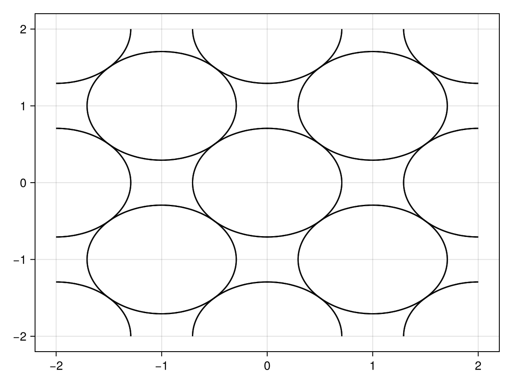
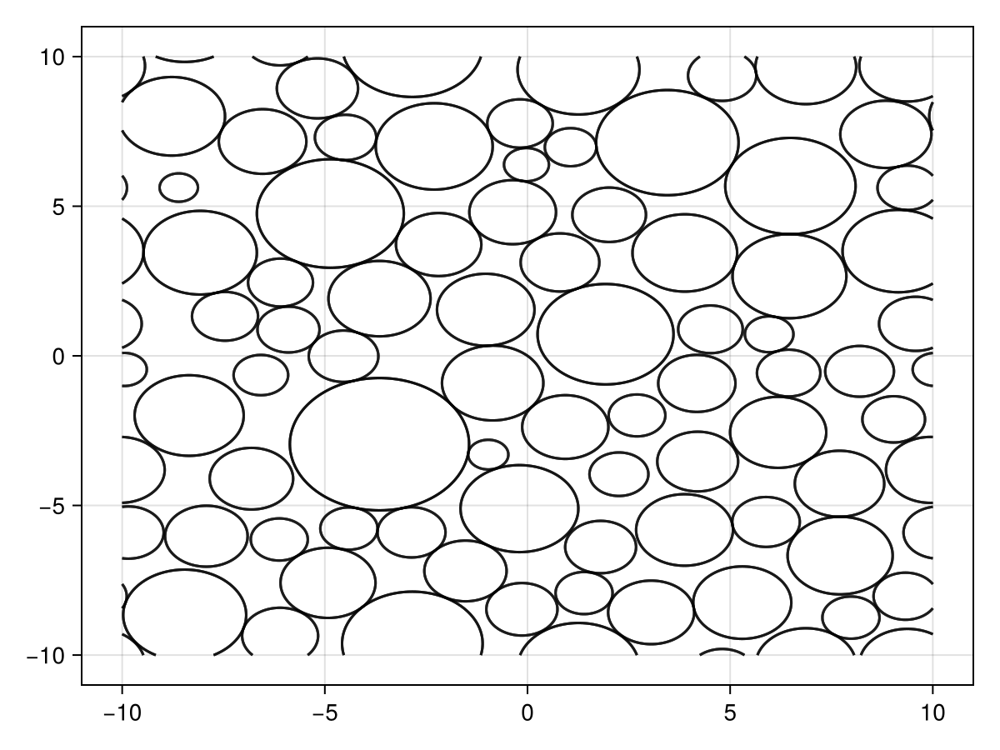

Obstructions to free diffusion
MCMRSimulator.jl provides several geometry representations for restricting diffusion and assigning MRI properties to tissue compartments.
Geometry representations
| Geometry | Julia constructor | CLI or file source | Intrinsic dimensionality | Typical use |
|---|---|---|---|---|
| Infinite walls | Walls | mcmr geometry create walls | 1 | Parallel planes |
| Infinite cylinders | Cylinders | mcmr geometry create cylinders | 2 | Repeating cylindrical fibres |
| Cylindrical annuli | Annuli | mcmr geometry create annuli | 2 | Myelinated cylindrical fibres |
| Spheres | Spheres | mcmr geometry create spheres | 3 | Spherical cells or sphere-based morphologies |
| Connected finite cylinders | FiniteCylinders | Usually loaded from SWC | 3 | Connected morphology with spherical nodes and cylindrical links |
| Meshes | Mesh | PLY files or generated externally | 3 | Arbitrary closed surfaces |
| Bendy cylinders | BendyCylinder | mcmr geometry create bendy-cylinder | 3 | Curved or varying-radius fibres |
| Liminal geometry | LiminalGeometry | mcmr geometry create liminal | 3 | Statistical populations of cells without explicit global packing |
Cylinders and Annuli are intrinsically two-dimensional geometries. Applying a rotation embeds them in three-dimensional space. FiniteCylinders, by contrast, are three-dimensional connected structures and should not be confused with infinitely repeating Cylinders.
Loading geometry files
read_geometry is the general entry point for loading geometry files. When no format is supplied, it detects the format from the file contents rather than the filename extension.
| Format | Dedicated reader | Result and notes |
|---|---|---|
| JSON | read_geometry_json | User-defined obstruction groups |
| PLY | load_mesh | A Mesh geometry |
| SWC | read_swc | FiniteCylinders by default; use swc_as_spheres=true for overlapping Spheres |
| CATERPillar | read_caterpillar | Overlapping Spheres groups from CATERPillar's whitespace-delimited output |
| Liminal | Liminal geometry | A LiminalGeometry with child geometry files |
For example, the format can normally be inferred automatically:
using MCMRSimulator
geometry = read_geometry("geometry_file")For streams, or when an explicit override is useful, pass format:
geometry = read_geometry(io; format=:swc, swc_as_spheres=true)See the linked reader docstrings for the format-specific syntax and options.
Overlapping spheres
Set overlapping=true on Spheres when a sequence of overlapping spheres represents one continuous structure. This is the representation used by read_swc(...; swc_as_spheres=true) and read_caterpillar. It differs from a collection of independent, non-overlapping spherical obstructions: overlapping spheres are treated as permeable within their overlapping regions so that the chain does not create artificial barriers between adjacent samples.
Connected finite cylinders
FiniteCylinders represents a connected morphology using spherical endpoints and cylindrical links. read_swc constructs these links from the parent IDs in an SWC file. Use this representation when explicit node connectivity is available and cylindrical links are appropriate; use swc_as_spheres=true when the sphere samples themselves are the desired morphology representation.
Generating custom geometries
The constructors for these components all have a similar interface. Some expect certain component-specific keyword arguments (e.g., radius for Spheres and Cylinders, or the keywords regarding the myelin-induced off-resonance field produced by Cylinders or Annuli). MRI relaxation properties within the obstruction and collision parameters (stuck spins, magnetisation transfer rate & permeability) can be set using keyword arguments as described in the properties section. Finally, these constructors expect a set of keyword arguments that control their location. These arguments are identicaly across all constructors (although the expected input depends on the dimensionality of the component as listed in the table above):
position: Set the positions for each generated components (not used inMesh).repeats: Set the distance with which all components should be repeated.rotation: Applies a single rotation to the whole system.
Components with a lower dimensionality are defined by default along the x-axis (for dimensionality of 1) or the x-y plane (for dimensionality of 2). In other words, the normal of the Walls point in the x-axis by default, while the Cylinders point in the z-axis. Shifts and repeats should only be provided in this lower-dimensional space. The rotation keyword can be used to define these components along other lines/planes (see MCMRSimulator.get_rotation).
This repeating geometry means that a spin leaving the geometry at the top of the bounding box, will next see the geometry at the bottom of the bounding box. For this to make sense any geometries going beyond the top of the bounding box should continue at the bottom of the bounding box. Future versions of MCMRSimulator will allow spins to continue in a flipped version of the geometry, which ensures that any geometries crossing the bounding box boundary are continuous (see tracking issue).
From the command line all of these keywords are available as flags, which can be seen by running:
mcmr geometry create walls/cylinders/annuli/spheres/bendy-cylinder --helpIn Julia, the easiest way to get the documentation for all keywords is to run:
?Walls/Cylinders/Annuli/Spheres/Mesh/BendyCylinderor by following the links in the table above. For meshes use the load_mesh function to read a mesh from disk.
For example, we can create two base cylinders, which repeat infinitely by running:
using MCMRSimulator
geometry = Cylinders(radius=sqrt(0.5), position=[[0, 0], [1, 1]], repeats=[2, 2])Alternatively, the same configuration could be produced with a single cylinder by providing a rotation.
using MCMRSimulator
rotation = [
sqrt(0.5) sqrt(0.5) 0.
-sqrt(0.5) sqrt(0.5) 0.
0. 0. 1.
]
geometry = Cylinders(radius=sqrt(0.5), repeats=[sqrt(2), sqrt(2)], rotation=rotation)
Randomly distributed cylinders/annuli/spheres
A random set of positions and radii can be created using random_positions_radii. The user in this case sets a target density (70% in the example below) and over which length scale the configuration should repeat itself (20x20 micrometer in the example below).
(positions, outer_radii) = random_positions_radii((20, 20), 0.7, 2)From the command line this functionality is available by running mcmr geometry create-random cylinders/annuli/spheres.
These can be used to produce randomly distributed cylinders:
geometry = Cylinders(radius=outer_radii, position=positions, repeats=(20, 20))
When used as initialisation for annuli, an inner radius will also need to be computed:
geometry = Annuli(inner=0.8 .* outer_radii, outer=outer_radii, position=positions, repeats=(20, 20))